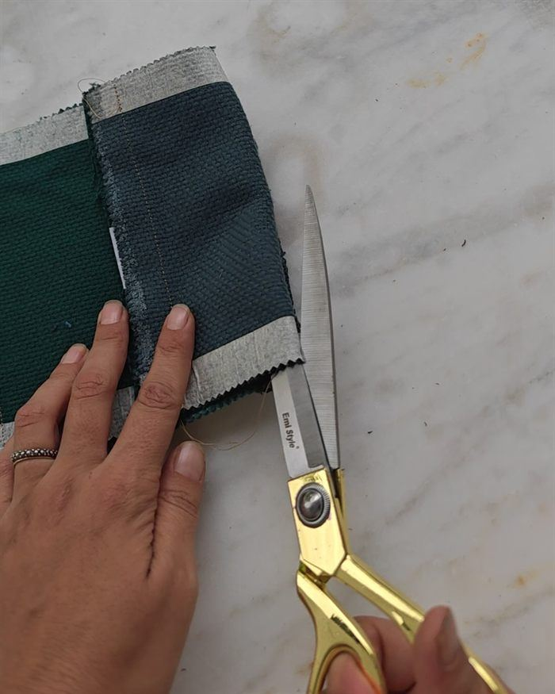

Pezzi che non si trovano altrove
Borse e accessori cuciti a mano da campionari di tappezzeria che le aziende dismettono a fine collezione. Nessuno è uguale a un altro.

Tessuti nuovi, da 30 a 180 € al metro
Le cartelle colore di tappezzeria sono i campioni con cui le aziende presentano le loro collezioni. Tessuti nuovi e di qualità, che a fine stagione vengono dismessi e, senza qualcuno che li recuperi, finiscono buttati.
Io li taglio, li ricompongo e li cucio a mano nel mio laboratorio, in campagna, in Sicilia. Lavoro da sola. Non c'è una linea di produzione, nemmeno piccola: ogni pezzo passa dalle mie mani e nasce dal materiale che ho davanti, non da un modello da ripetere.

Come diventare rivenditore Repunto
Scegli tu
Ti mando foto e misure dei pezzi disponibili e scegli quelli giusti per il tuo negozio. Il prezzo al pubblico lo decidi tu.
Condizioni
Prezzi e condizioni per i rivenditori te li mando via email, dopo l'iscrizione qui sotto.
Spedizione
In tutta Europa.
Borse, accessori, casa
Borse (zaini, tote, tracolle, pochette), bustini, scrunchie, portachiavi e portacarte, e alcuni pezzi per la casa.
Negozi che scelgono con cura
Boutique, concept store, botteghe di artigianato, spazi che raccontano la sostenibilità senza slogan. Se vuoi sapere come lavoro e perché, leggi il manifesto di sostenibilità di Repunto.
Lasciami i dati del tuo negozio
Guardo io ogni richiesta e, quando ho nuovi pezzi disponibili, ti scrivo. La lista è riservata a negozi e botteghe. Nessun obbligo, e puoi cancellarti quando vuoi.
Se preferisci parlarne prima, scrivimi dalla pagina Contatti: rispondo io.